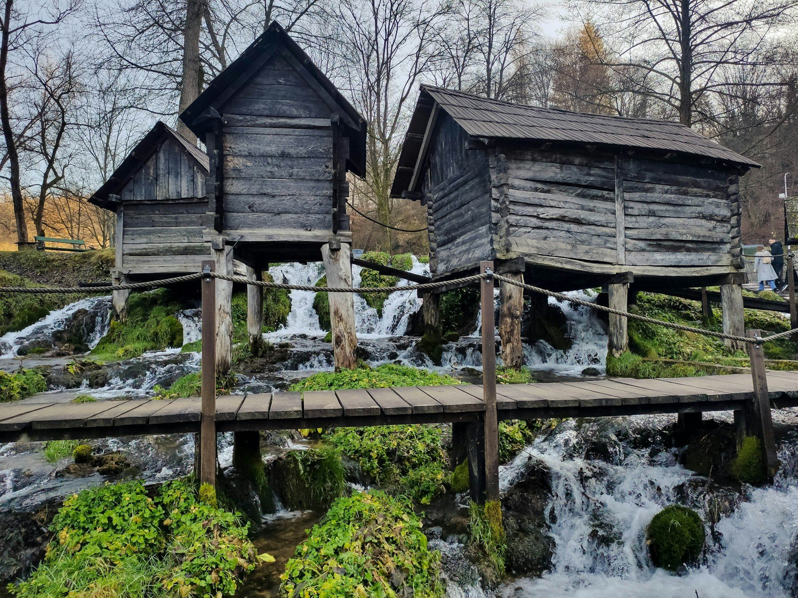

Jajce
No. 21 · Bosnia & Herzegovina · from the Bosnia deck · 2 nights · nature, lakes & medieval history
The deck's nature-and-history base: a medieval walled town where the Pliva river falls twenty metres into the Vrbas, in the middle of town. It's a long drive from Mostar, which is exactly why the deck gives it two unhurried nights.
The list
| No. | Thing | Notes |
|---|---|---|
| 1 | Pliva Waterfall | The town's centrepiece — travertine terraces where the Pliva meets the Vrbas. Best from the bridge below, worst from inside a moving bus. |
| 2 | The medieval fortress | The walls and citadel above the old town — the town's view, and its history in one circuit. |
| 3 | The old town | Small, stone, and walkable — the deck gives it a slow afternoon, not a checklist. |
| 4 | Pliva Lakes & the watermills | Wooden shingle mills on stilts over the weirs downstream — the deck's Day 10, a short ride from town. |
| 5 | Travnik | The deck pairs it with the Pliva day: an Ottoman vizier town with a painted mosque on the way back round. |

Eat & drink: plain Bosnian grills and river fish; the region is cheese-and-kajmak country. Currency is the convertible mark (KM), cash preferred. The drive from Mostar is the longest leg in the deck's plan — check current road times before committing.Field note · Balkans 2027